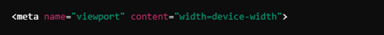
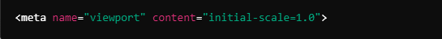
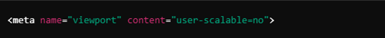

Concepto de Diseño Web Responsivo
El diseño web responsivo es un enfoque de desarrollo que permite que los sitios y aplicaciones se adapten automáticamente al tamaño, orientación y capacidades de diversos dispositivos, desde teléfonos móviles hasta computadoras de escritorio, para ofrecer la mejor experiencia al usuario sin necesidad de crear versiones específicas.
La importancia del diseño web responsivo en la actualidad
Es esencial debido a la diversidad de dispositivos, especialmente smartphones, para acceder a internet. Mejora la experiencia de usuario, branding y SEO, asegurando mayor accesibilidad, optimización para motores de búsqueda, ahorro de recursos y adaptación a tendencias móviles. Esto lo convierte en clave para la eficiencia y competitividad de los sitios web.
Su impacto en la experiencia del usuario
Los usuarios acceden al contenido de forma cómoda y rápida, disfrutando de una navegación intuitiva y una mejor legibilidad. Esto garantiza una experiencia de usuario fluida y consistente, sin importar el dispositivo que utilicen, ya sea una computadora, tableta o teléfono inteligente. Un sitio optimizado mejora la usabilidad, reduce la frustración y fomenta mayor lealtad a la marca, aumentando las conversiones e interacción.
Viewport
Es el área visible de una página web en un dispositivo, y es un concepto fundamental en el diseño web responsivo. Se refiere al espacio en la pantalla donde se muestra el contenido de una página.
Funcionamiento del Viewport
Es fundamental en la visualización de sitios web en diferentes dispositivos, ya que define el área visible de una página en la pantalla del usuario. Su papel incluye:
- Adaptación del contenido
Permite que los sitios se ajusten al tamaño de la pantalla, garantizando que el contenido se muestre de manera óptima sin necesidad de desplazamiento horizontal.
- Experiencia del usuario
Controla el tamaño y la escala del contenido, lo que contribuye a una navegación más fluida, mejorando la interacción y satisfacción del usuario.
- SEO y rendimiento
Un uso correcto del viewport mejora el posicionamiento en motores de búsqueda, lo que es crucial para atraer tráfico.
Configuración del Viewport
La configuración se realiza mediante la etiqueta <meta name="viewport"> en la sección <head> del HTML, con atributos clave como:
- width: Define el ancho del viewport, pudiendo ser un valor fijo o "device-width".

- initial-scale: Establece el nivel de zoom inicial al cargar la página.

- maximum-scale y minimum-scale: Controlan los niveles máximos y mínimos de zoom permitidos.
- user-scalable: Indica si el usuario puede hacer zoom, aunque generalmente se recomienda permitirlo.

Uso del Viewport en Diferentes Dispositivos
- Dispositivos móviles: Un viewport bien configurado permite que el contenido se ajuste automáticamente al tamaño de la pantalla, mejorando legibilidad y usabilidad.
- Escritorios: En pantallas más grandes, el viewport ayuda a utilizar el espacio de manera efectiva, presentando un diseño más amplio y detallado.
Media Queries
Las CSS3 Media Queries son una herramienta esencial para el diseño web responsivo, permitiendo aplicar estilos específicos a diferentes dispositivos y tamaños de pantalla. A continuación, se profundiza en su uso y se analizan ejemplos prácticos.
Uso de Media Queries
- Adaptación a diferentes dispositivos: Las media queries permiten que un sitio web se ajuste a diversas resoluciones y características de los dispositivos, como ancho, altura, orientación y resolución. Esto es fundamental en un mundo donde los usuarios acceden a internet a través de una variedad de dispositivos, desde smartphones hasta pantallas de escritorio.
- Sintaxis básica: La sintaxis de una media query es sencilla. Se utiliza la regla @media, seguida de condiciones que especifican cuándo se aplican los estilos. Aquí hay un ejemplo básico:

En este caso, el fondo del cuerpo cambiará a azul claro cuando el ancho de la pantalla sea de 600 píxeles o menos.
- Condiciones comunes: Algunas de las condiciones más utilizadas en media queries incluyen:
- min-width: Define estilos para pantallas que tienen un ancho mínimo.
- max-width: Aplica estilos para pantallas con un ancho máximo.
- orientation: Especifica estilos según la orientación de la pantalla (horizontal o vertical).
- resolution: Aplica estilos según la densidad de píxeles.
Ejemplos Prácticos de Media Queries
- Estilos para dispositivos móviles: A continuación, un ejemplo que cambia el diseño de una tarjeta en función del ancho de la pantalla:

En este ejemplo, la tarjeta ocupa el 100% del ancho en pantallas pequeñas, 50% en pantallas medianas y 30% en pantallas grandes.
- Cambio de diseño basado en la orientación: Se pueden utilizar media queries para adaptar el diseño según la orientación del dispositivo:

Aquí, el tamaño de fuente se ajusta dependiendo de si el dispositivo está en orientación horizontal o vertical.
- Uso de características avanzadas: Además de los anchos, las media queries pueden incluir características más avanzadas:

Este ejemplo ajusta el esquema de color del sitio según la preferencia del usuario por un modo oscuro.